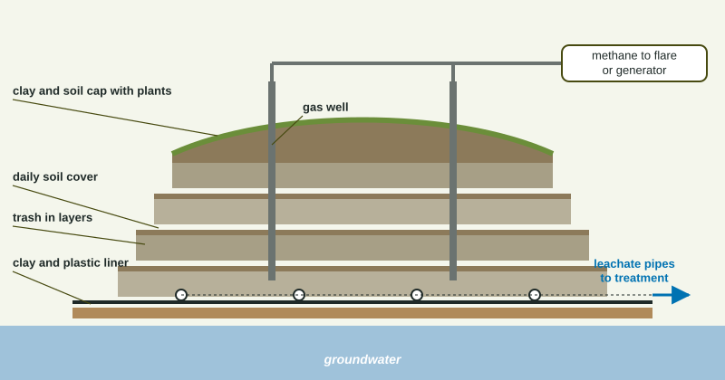

Every product you buy eventually becomes waste. Municipal solid waste (MSW) is the everyday trash from homes, schools and businesses. Where it goes, and what it does once it gets there, is the subject of this topic.
How much, and where it goes
The EPA reported that the United States generated 292.4 million tons of MSW in 2018, about 4.9 pounds per person per day. Paper and cardboard (about 23%) and food (about 22%) were the largest parts.
| Where it went (2018, EPA) | Millions of tons | Share |
|---|---|---|
| Landfilled | 146.1 | 50.0% |
| Recycled | 69.1 | 23.6% |
| Combusted with energy recovery | 34.6 | 11.8% |
| Composted | 24.9 | 8.5% |
| Other food management | 17.7 | 6.1% |
Worked example: a share of the total. What percent of 2018 MSW was landfilled?
Setup: . Answer: .
The sanitary landfill

- Liner: compacted clay and a thick plastic sheet keep liquid from reaching groundwater.
- Leachate collection: rainwater that seeps through trash dissolves chemicals and becomes leachate; perforated pipes collect it for treatment.
- Daily cover: a layer of soil each day limits odors, pests and windblown litter.
- Gas wells: bacteria break down food, yard waste and paper without oxygen, making methane, a fuel and a strong heat-trapping gas. Wells collect it to burn or to make electricity.
- Cap: clay, soil and plants seal a full landfill.
Inside a landfill, trash is packed tight and kept dry, so decomposition is very slow, which is why a closed landfill must be watched for decades. Old landfills without liners can leak leachate, and landfills take up land that nearby communities often do not want.
Reading waste data
Waste questions often give a table of tons by method or by material and ask for a share, a per-person amount, or a change over time. Write the setup with units so they cancel. For example, the EPA total of 292.4 million tons for about 327 million people works out to
Other ways to dispose of waste
Incineration burns trash at high temperature. It cuts volume by about 90% and can generate electricity (waste-to-energy), but it releases air pollutants such as CO2, particulates and some toxic chemicals, and leaves ash that may contain heavy metals and still needs a landfill. Ocean dumping of garbage is banned in the United States because trash, especially plastic, harms marine life. E-waste, discarded electronics, contains lead, mercury and cadmium that can leach out, along with gold, copper and other valuable metals, so it should be recycled at special facilities. Much e-waste has been shipped to poorer countries, where workers without protection burn or break it apart to recover metals, exposing themselves to the toxic metals inside. The next topic covers ways to make less waste in the first place.